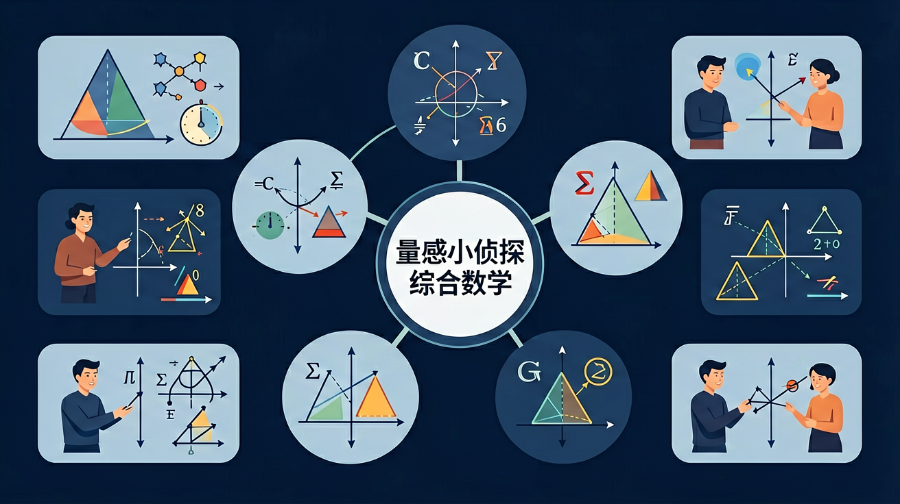

综合数学 · 培养对长度、重量、时间的感觉！
🔍 不用尺子，用眼睛和大脑估量！

把长度单位从最小拖到最大！
📦 单位标签
📊 从小到大（1=最小，4=最大）
📏 这支铅笔有多长？
⚖️ 重量单位口诀：
🍬 克(g)：一颗糖约1克，轻轻的
🎒 千克(kg)：一本书约1千克=1000克
🚛 吨(t)：一辆卡车约10吨=10000千克
这根香蕉有多长？
考验你所有的量感知识！
📏 量感侦探任务完成！
👋 我是小AI侦探！
点我获取提示！
❓ 为什么我的橡皮比同桌的小，却更重呢？
❓ 操场一圈是200米，跑5圈是多少千米呀？
❓ 妈妈说要买1斤苹果，可超市只有公斤秤怎么办？
学完这一课，这些问题你都能自信地回答。
先来测一测你已经掌握了哪些前置知识，帮助你更好地学习新内容！
第1题：1米等于多少厘米？
第2题：一支铅笔大约多长？
And：学生知道长短、轻重等基本概念
But：但说不清具体有多长/多重
Therefore：建立用标准单位描述量的意识
量感就像给东西贴数字标签！比如量课桌长度：用手掌量是5拃，用铅笔量是8根，但用尺子量就是120厘米。统一用厘米作单位，大家说的数字就一样啦！记住：测量时先选好单位（如厘米/千克），再看数字部分。
🌍 妈妈买菜时说'要3斤苹果'——'斤'就是单位，'3'就是数字。如果她说'要一堆苹果'，老板就不知道给多少啦！
测量黑板长度，哪种说法最准确？
分组测量讲台、课桌、黑板擦等物品
建立量感的方法：用身体做参照！1厘米≈大拇指宽，1分米≈手掌宽，1米≈一步长，1千米≈步行约15分钟。用生活经验"丈量"世界！
💡 用"迁移它"的视角：想想这个知识在哪些生活场景中还会用到？
注意：以上是同学们容易犯的典型错误，做题时要格外小心！
归纳长度单位从大到小的顺序和进率关系
判断下面说法是否合理：蚂蚁身长约5米
设计一个"量感挑战"：用身体部位测量教室的长度
And：学生已认识米、厘米等常见单位
But：不知道什么时候该用大单位或小单位
Therefore：理解单位大小与适用场景的关系
单位就像衣服尺码！量蚂蚁用厘米（太小穿不上米），量操场用米（太大穿厘米会累死）。看例子：小明身高1米35厘米，用米作单位是1.35米（适合体检表），用厘米是135厘米（适合做校服）。关键：大东西用大单位，小东西用小单位。
🌍 就像给大象称重用吨，给小猫称重用千克。如果用吨称小猫，数字会变成0.001吨，多不方便呀！
描述一本字典的厚度，最好用哪个单位？
And：学生能准确测量已知物体
But：对陌生物体不会合理猜测大小
Therefore：培养参照物比较的估测能力
估测就像玩'比一比'游戏！记住这些秘密武器：1元硬币≈2厘米（量短东西），教室门≈2米（量高度），自己体重≈30千克（量重量）。比如想知道课桌高度，比一比门——大概到门的一半，所以是1米左右。
🌍 买新书包时用手比划：'这个和我的数学书差不多大，应该能装下作业本'，这就是估测！
估测篮球场长度，最好和什么比较？
And：学生会用单一单位计算
But：遇到'1米5厘米+3分米'就糊涂
Therefore：掌握不同单位间的换算与统一
单位混搭就像货币兑换！先把所有量变成同一种单位：1米=100厘米，1分米=10厘米。看例题：1米5厘米+3分米=100厘米+5厘米+30厘米=135厘米。口诀：'大变小，加个0；小变大，去个0'（米→厘米加两个0）。
🌍 就像买奶茶：中杯500毫升，大杯0.6升，要比较就得都变成毫升或升。
2千克-300克=（ ）
先独立作答，再点选项查看对错与错因。
下列哪个最接近一本数学书的重量？
学校游泳池长约25()
买哪种包装的牛奶最划算？
教室黑板长约3____，宽约1____
答案：米,米
常见黑板尺寸单位用米
一瓶矿泉水500____，4瓶就是____升
答案：毫升,2
500mL×4=2000mL=2L
完成学习后，用这两道题检验你对"长度单位与量感"的掌握程度！
第1题：3m=（ ）cm
第2题：课桌高约（ ）
✅ 画单位阶梯图：千米-米间是1000，米-分米间是10
💡 受十进制思维定势影响
✅ 做身体游戏：摸头发说'毫米'，抱书包说'千克'
💡 单位抽象缺乏具象联系
口诀：大化小乘进率，小化大除一下
类比：单位换算就像货币兑换，需要知道汇率（进率）